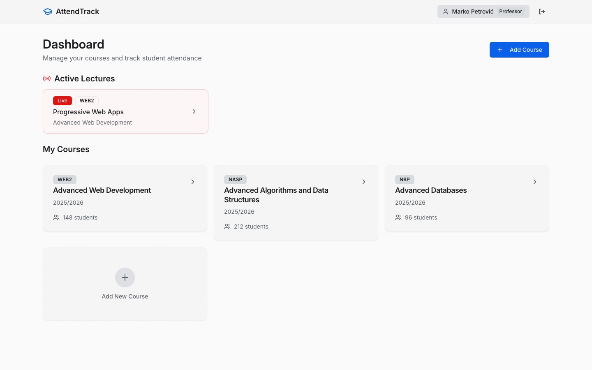
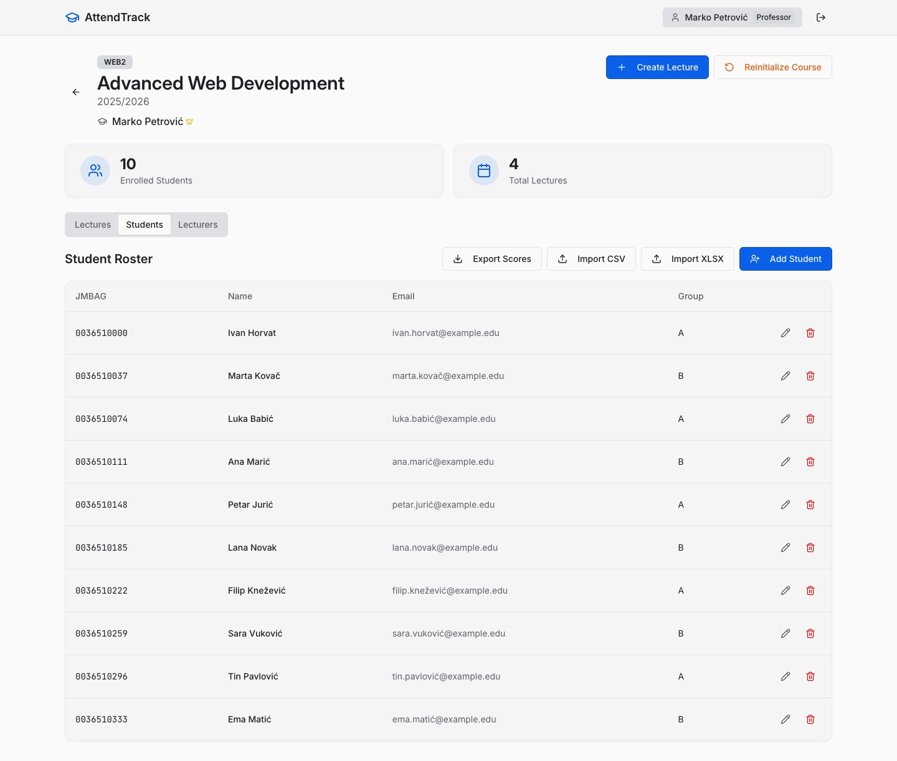
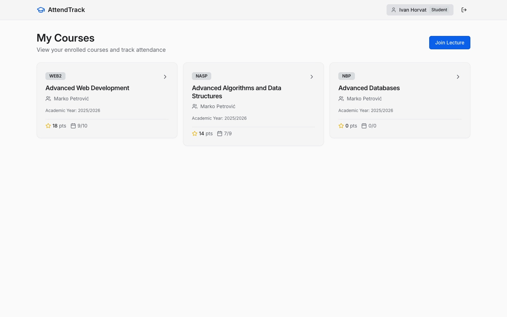

AttendTrack Evidencija prisutnosti
Attendance tracking for lectures, built for and used at FER. Team project, 2025/26.
The lecturer starts a lecture and puts a rotating QR code on the projector. Students scan it on their phones, and the lecturer's screen updates live.
My favourite part: AI head-counting. I added a feature where the lecturer takes a photo of the room and the backend counts the people in it. A YOLOv8 model, exported to ONNX, runs inside the .NET server, so no external AI service is involved. Each count is saved per lecture, with history and a manual recount, so it can be compared with the number of check-ins and catch people signing in for absent friends.
- Rotating QR plus manual codes, grace periods, lectures that span several hours
- CSV/XLSX student import, score export, in-lecture questions with points
- Roles for student, associate, professor and admin; Google, Microsoft and AAI@EduHr sign-in
- Live updates over SignalR
ASP.NET Core · C# · EF Core · React · TypeScript · SignalR · YOLOv8 / ONNX Runtime · OIDC


